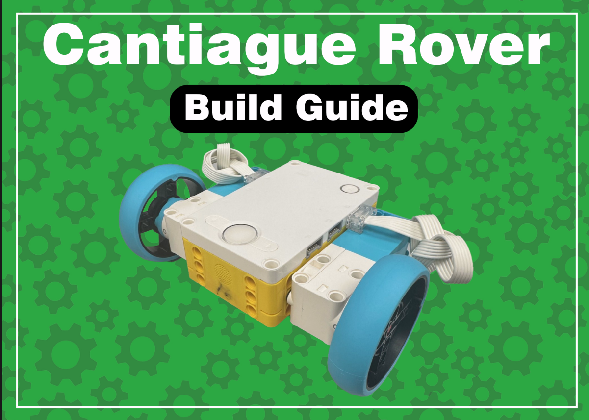
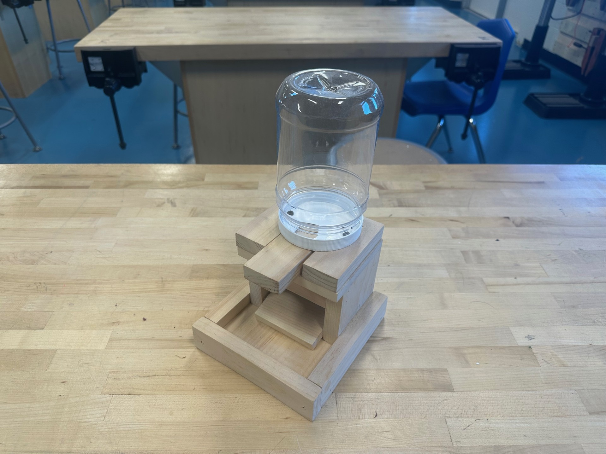
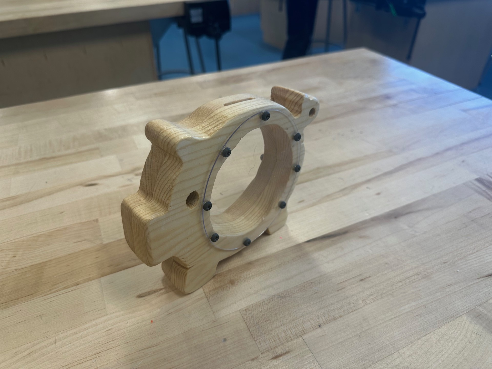
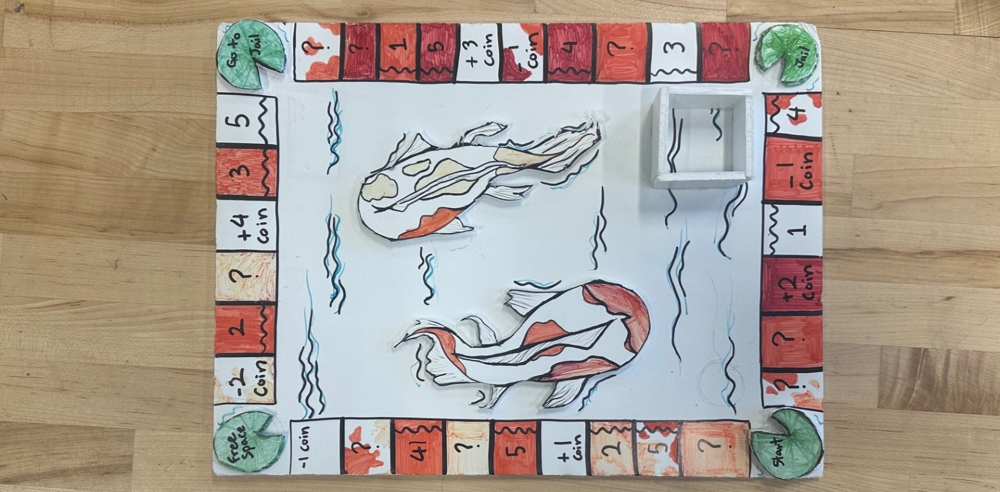
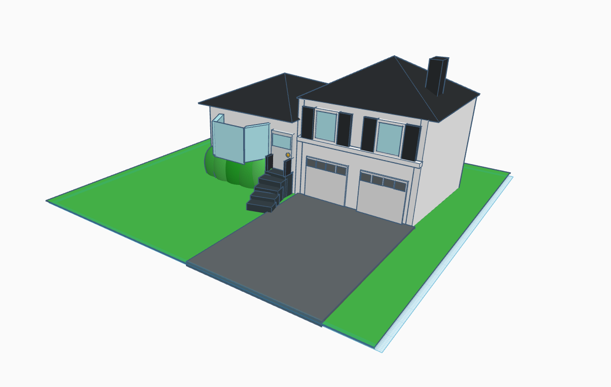
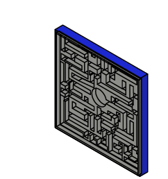
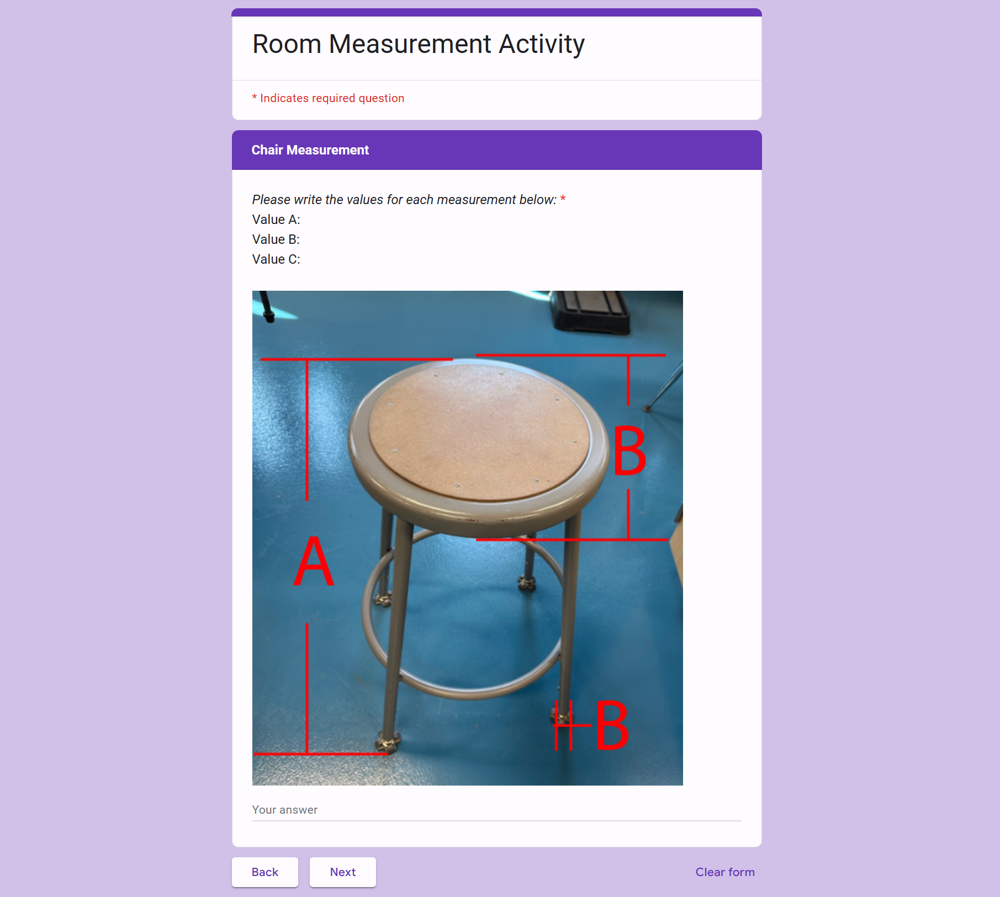
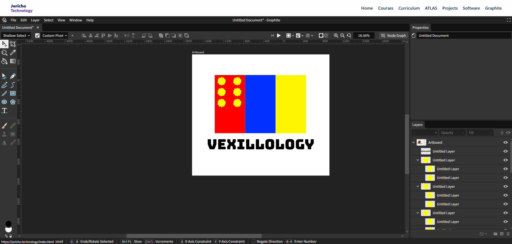

Technology 7
Building on the skills learned in Technology 6.

Technology 7 is the second course in the middle school technology sequence, designed to build upon the foundational skills introduced in sixth grade. Students will deepen their understanding across multiple domains, including 3D printing, laser cutting, 3D modeling, woodworking, hand tools, computer science, problem-solving and engineering design. Throughout the course, students will transform their ideas into tangible prototypes, gaining hands-on experience in the full design and creation process.
Projects






